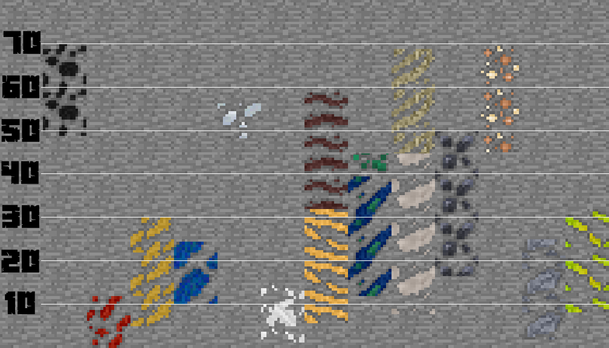

Craft yourself a Field Manual to find out more info on samples, deposits and more!
Modded Minecraft makes mining all too easy - ther are dozens of ways of destroying all of the world in a quick way, but what about an interesting way?
That's where Geolosys steps in. Geolosys adds a Geolological system
to Minecraft, with real-life mineral variants for all of the common ores you find.
With TerraFirmaCraft, the issue is that once you have finally found your ore and mined it (the fun part), processing it into an ingot isn't easy. And that's how it should be, for its overall design
As for Geolosys, the realistic
mineral variant of ores is what generates, but when you break them you'll get something that is familiar, easy to use, and easily processed however you like.
For compatibility, you can even silk touch some ores to get their Vanilla variants!